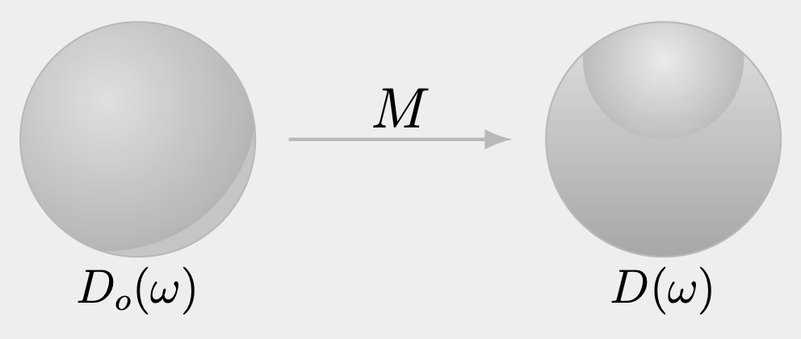

Problem¶
Let \(S^2=\{\omega\in\mathbb{R}^3:\|\omega\|=1\}\) be the unit sphere equipped with its standard solid angle measure \(\text{d}\omega\). Let \(D_o:S^2\to\mathbb{R}\) be a density function on the sphere, and let \(M\in\mathbb{R}^{3\times 3}\) be an invertible matrix.
Define a mapping \(T:S^2\to S^2\) by
\[
\begin{equation}\tag{1}
T\left(\omega\right)=\omega_o=\frac{M^{-1}\omega}{\left|\left|M^{-1}\omega\right|\right|}
\end{equation}
\]
Suppose a transformed spherical density \(D:S^2\to\mathbb{R}\) is defined by preserving density with respect to solid angle, namely
\[
\begin{equation}\tag{2}
D(\omega)\text{d}\omega=D_o\left(\omega_o\right)\text{d}\omega
\end{equation}
\]
Prove that
\[
\begin{equation}\tag{3}
D(\omega)=D_o\left(\frac{M^{-1} \omega}{\left|\left|M^{-1}\omega\right|\right|}\right)\frac{\left|\det{\left(M^{-1}\right)}\right|}{\left|\left|M^{-1}\omega\right|\right|^3}
\end{equation}
\]
Here \(\text{d}\omega\) and \(\text{d}\omega_o\) denotes infinitesimal solid angle elements on \(S^2\).
